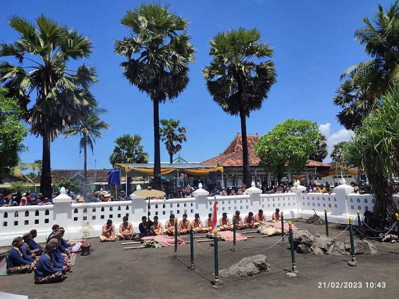
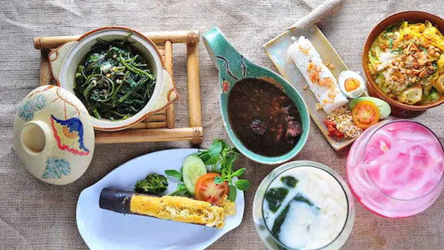
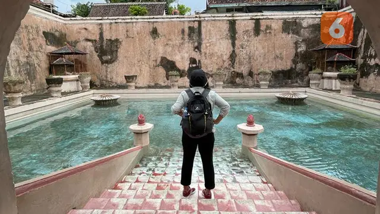
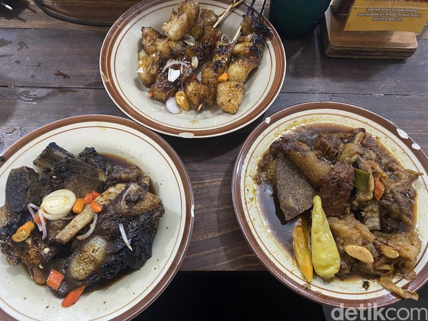

Artikel Terbaru

Kampung Satwa Kedung Banteng Sleman

10 Tempat Makan Nasi Goreng di Jogja yang Murah dan Porsinya Banyak, Sedap!

Ki Juru Martani: Penasihat Mataram Islam Kepercayaan Panembahan Senopati

Candi Bawah Tanah Yogyakarta: Candi Sambisari

Pantai Parangkusumo terdapat bangunan sakral yaitu Cepuri Parangkusumo.

Sate Ratu “Sate Ayam Merah”, Kuliner unik dari Yogyakarta

Sleman - Ledok Sambi di Desa Wisata Sambi, Sleman, Yogyakarta.

Asyiknya Wisata Main Kano di Pantai Sadranan Yogyakarta Cuma Rp40 Ribuan

Intip Pesona Pantai Wediombo, Destinasi Berlibur Menarik di Yogyakarta

Menelusuri Bangunan Megah bak Kastil di Balik Gang Sempit Kotagede

5 Destinasi Wisata Kuliner Unik di Yogyakarta, Tawarkan Suasana dan Hidangan Berbeda

Kenalkan Ini Ampo Makanan dari Tanah yang Jadi Warisan Budaya di Bantul

Kampung Wisata Taman Sari, Pesona Sejarah dan Budaya di Jantung Yogyakarta

12 Rekomendasi Hotel di Yogyakarta Dekat Malioboro, Bisa Jadi Pilihan saat Berlibur

Catat, 6 Rekomendasi Liburan di Yogyakarta untuk Long Weekend

10 Kuliner Nonhalal di Jogja, Ada Burger-Ramen Babi

Indahnya Museum Ullen Sentalu, Destinasi Wisata Bersejarah di Jogja

Di Jogja Ada Resto Nyaman yang Punya Bakmi Jawa dan Donat Enak

Buka 24 Jam! Di Jogja Bisa Puas Makan Iga Bakar hingga Iga Gledek
Pesona Candi Ratu Boko, Destinasi Menarik untuk Liburan di Yogyakarta

7 Kuliner Khas Jogja yang Tidak Boleh Terlewatkan Saat Berkunjung

20 Rekomendasi Makan Malam di Jogja Murah dan Nagih, Wajib Dicoba

Ciri Khas Yogyakarta: Pesona Kota Budaya dan Wisata yang Menawan